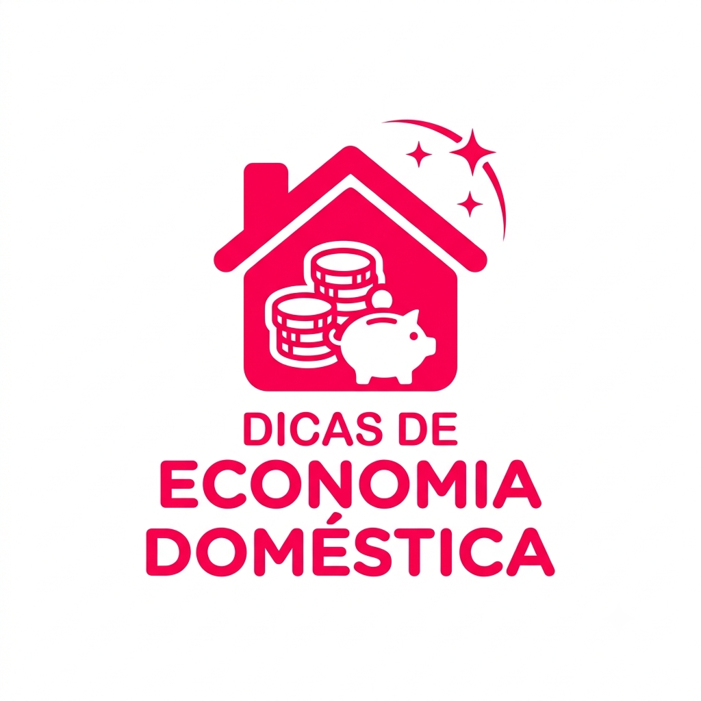

Dicas de Economia Doméstica
Por: Thais Tondin
Faça uma lista de compras: antes de ir ao supermercado, verifique os armários e liste tudo o que é realmente necessário.
Faça um planejamento semanal das refeições: desta forma, você saberá o quanto precisa comprar e evita desperdícios.
Experimente novas marcas: deixe o julgamento de lado e conheça os produtos mais baratos. Eles podem ser melhores que as marcas tradicionais.
Evite ir às compras com fome: parece mentira, mas ir ao supermercado com fome é uma armadilha. Você vai comprar além do necessário, por conta da necessidade de comer.
Vá sozinho: várias pesquisas científicas mostram que gastamos mais quando estamos acompanhados. Para economizar, vá sozinho ao supermercado.
Fonte: Riconnect